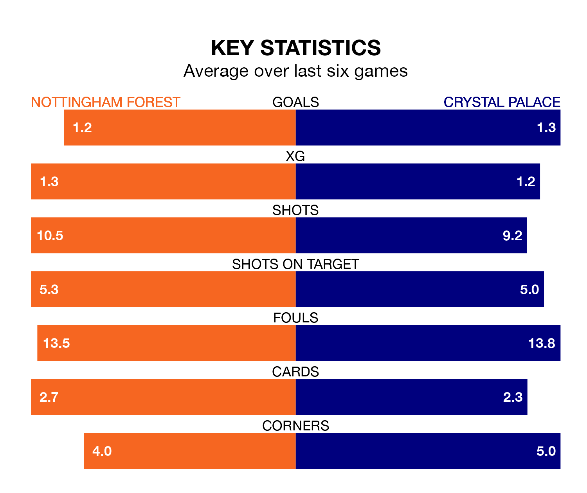

Nottingham Forest are on a poor run ahead of hosting Crystal Palace at the City Ground on Saturday, with just four points collected from their last six games.
The Tricky Trees have picked up one win and one draw in their last six Premier League games, and face an Eagles side whose last six games have brought one win and two draws.
Forest are 17th in the table after 29 games, of which they have won six and drawn seven, earning 25 points.
Palace are two places ahead of the Tricky Trees in 15th, with seven wins and eight draws putting them on 29 points.
With 33 goals in 28 games so far this season, the Eagles are scoring at below the league average rate with 1.2 goals per game. And they are conceding more than average, letting in 48 goals at a rate of 1.7 per game.
The hosts are also below average scorers, with 1.2 goals per game, compared to a league average of 1.6. They have conceded 1.8 goals per game.
In the last three years, Forest and Palace have played each other on three occasions. Forest won one of them and they drew the other.
Their last meeting was on October 7, when they played out a 0-0 draw.
Forest's last match was on March 16, a 1-1 draw against Luton Town, with Chris Wood getting the goal for the Tricky Trees.
Palace drew 1-1 with Luton Town last time out, on March 9, with Jean-Philippe Mateta on the scoresheet.
Updated: 12:16 (UTC), 25/03/24